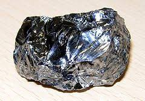
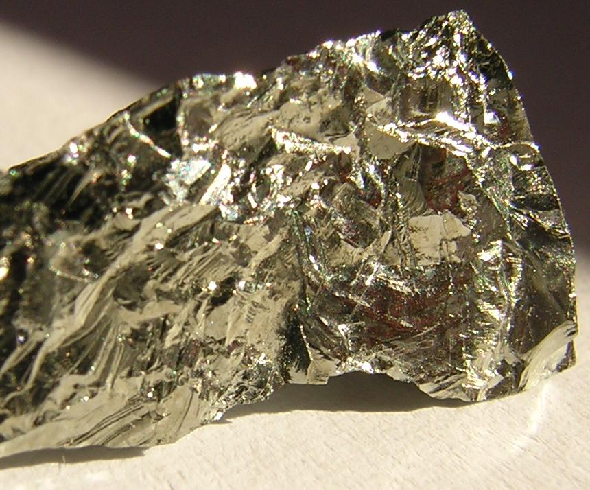
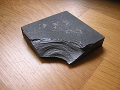

Półprzewodniki
Półprzewodnik- jest substancją w swojej budowie krystaliczną, którą główną cechą czyli konduktywność jest zmieniana w szerokim zakresie. Głownie jest to powodowane przez domieszkowanie, ogrzewanie, oświetlenie zewnętrzne bądz inne czynikki które mogą powodować, lub doprowadzać do zmian w półprzewodniku.
Najpopularniejsze półprzewodniki
Krzem - 640 Ω*m

German - 0,46 Ω*m

Bor - 10000 Ω*m

Zastosowanie półprzewodników w układach elektronicznych:
- Diody:
- diody prostownicze
- diody elektroluminescyjne
- diody pojemnościowe
- diody tunelowe
- diody Schottky'ego
- Tranzystory:
- tranzystory bipolarne
- tranzystory unipolarne
- fototranzystory
- Hallotrony
- Termistory
- Lasery
- Tyrystory